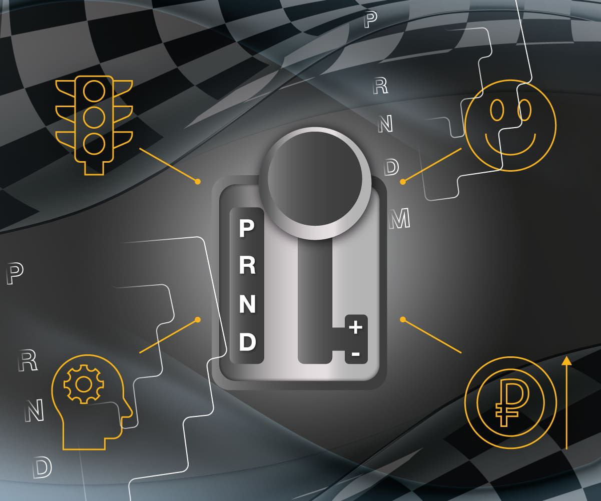

Описание
Автоматическая коробка передач (АКПП) — это тип трансмиссии, которая самостоятельно выбирает нужное передаточное число в соответствии с режимом движения и сопутствующими факторами. В отличие от механической коробки передач, где водитель использует обе ноги и три педали (сцепление, тормоз, газ), в автомобиле с АКПП нужно только нажимать одной ногой на газ или тормоз и рулить.
Некоторые основные элементы АКПП:
- Гидротрансформатор: Выступает в роли сцепления, состоит из колёс и лопастей, помещённых в специальный раствор. Благодаря гидротрансформатору переключение передач происходит плавно, почти незаметно.
- Планетарный механизм: Представляет собой редуктор, обеспечивающий переключение скоростей в коробке-автомат путём изменения передаточного числа на шестерёнках.
- Гидросистема: В эту группу входит масляная помпа, фильтрующий элемент, толкатели и плита-гидрораспределитель. Применяется для преобразования момента мотора, создания рабочего давления и защиты элементов коробки-автомат от чрезмерного нагрева и появления ржавчины.
- Блок управления: В задачу узла входит управление коробкой передач автомат, благодаря получению информации от датчиков, педалей, систем АБС/ЕСП, ручки АКПП и т. д.
Преимущества
- Комфорт: Нет необходимости переключать передачи вручную, что делает поездки более удобными, особенно в пробках.
- Легкость в управлении: Вождение становится проще, так как автомобиль самостоятельно выбирает нужную передачу.
- Меньше утомляемости: Поскольку нет необходимости часто переключать передачи, водитель меньше утомляется.
Недостатки
- Стоимость обслуживания: АКПП сложнее в обслуживании и ремонте, чем МКПП.
- Потребление топлива: Некоторые виды автоматических трансмиссий могут потреблять больше топлива по сравнению с механическими коробками, хотя современные модели становятся более экономичными.
- Стоимость: Автомобили с АКПП, как правило, дороже как на этапе покупки, так и в обслуживании.